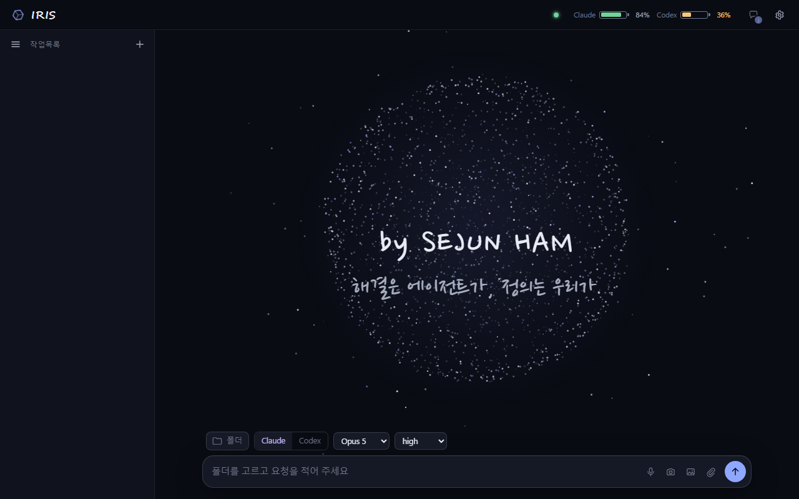
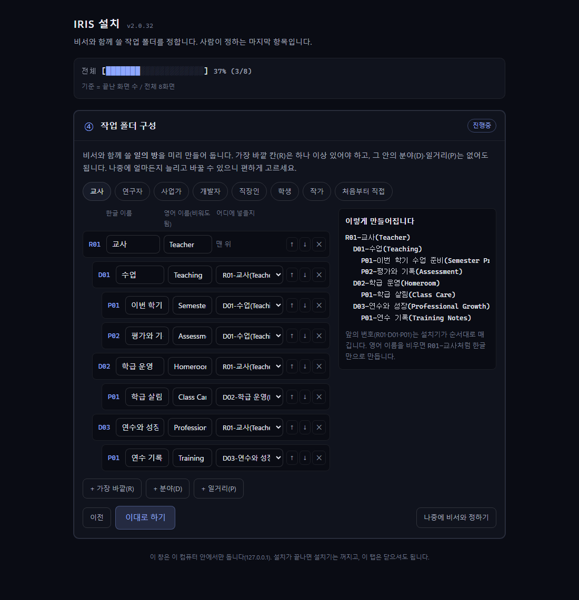
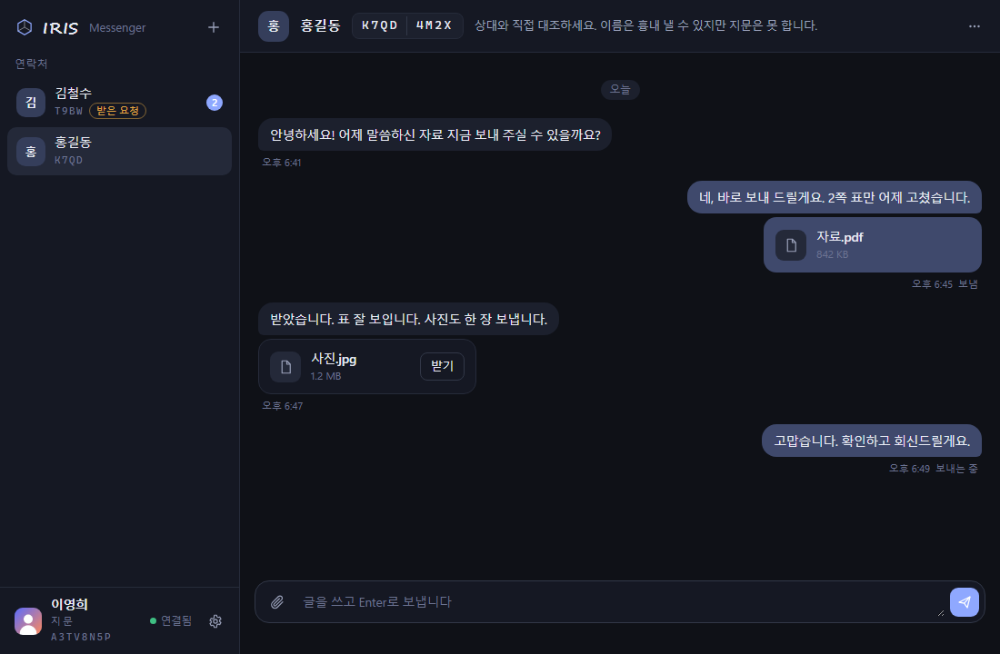

IRIS란
내 PC 안에 만드는 AI 비서 작업실 — 폴더 체계와 규칙, 에이전트를 한 상자에.
비서에게 일을 맡기려면 세 가지가 있어야 합니다. 일이 놓일 자리, 일하는 방식을 적은 규칙, 그리고 실제로 일하는 손. IRIS는 이 셋을 한 폴더(C:\IRIS)에 함께 설치합니다.
폴더 체계
역할 → 분야 → 프로젝트 → 단계 순서로 자리를 잡습니다. 비서는 지금 어느 자리에서 일하는지 폴더로 압니다.
규칙 파일
각 폴더의 AGENTS.md가 그 자리의 규칙입니다. 상위 폴더의 규칙은 하위에 자동으로 이어집니다.
에이전트와 창
Claude Code와 Codex가 실제 손입니다. IRIS 창은 그 세션 여러 개를 한 화면에서 지휘합니다.
터미널, 데스크탑 앱, 그리고 IRIS
같은 Claude Code를 쓰더라도, 어디에서 어떻게 쓰느냐가 다릅니다. IRIS는 셋 중 "일이 놓일 자리와 규칙까지 함께 설치하는" 유일한 길입니다.
| 터미널 | Claude Code 데스크탑 앱 | IRIS | |
|---|---|---|---|
| 처음 세팅 | Node·Git·Python·CLI를 하나씩 직접 설치 | 앱 설치 한 번. 문서 도구는 별도 | zip 하나, 더블클릭 한 번런타임·Claude Code·Codex·문서 도구·대시보드가 C:\IRIS 한 폴더에 |
| 일이 놓일 자리 | 사용자가 알아서 | 프로젝트 폴더를 고름 | 역할 → 분야 → 프로젝트 → 단계 폴더가 미리직업별 프리셋 7종 |
| 규칙 파일 | 직접 작성·관리 | 직접 작성 | 폴더마다 AGENTS.md, 상위 규칙 자동 상속어느 폴더에서 열든 비서가 그 자리의 규칙을 앎 |
| 에이전트 | 한 번에 하나 | Claude만 | Claude Code + Codex대화 맥락을 둘 사이에 넘김 |
| 화면 | 검은 글자 흐름 | 깔끔한 대화 창 | 대화 창 + 세션 카드창을 닫아도 세션은 살아 있음 |
| 동시에 여러 작업 | 창을 여러 개 띄워 직접 오감 | 세션 여러 개를 열 수 있음 | 한 화면에서 여러 세션 지휘끝나면 알림, 허락 요청은 카드로 |
| 문서 작업 | MCP를 직접 찾아 설치 | 별도 설치 | 한글·엑셀·PPT·워드·PDF 도구 동봉한컴·오피스가 없으면 대기, 깔면 켜짐 |
| 인터넷이 없을 때 | 설치가 어려움 | 설치 불가 | 폴더·규칙·도구까지 오프라인 설치로그인·내려받기만 남은 일로 기록 |
| 되돌리기 | — | 설정 위치가 흩어짐 | 폴더 하나 지우면 끝전부 C:\IRIS 안, 설치 영수증 남김 |
| 비용 | 구독만 | 구독만 | 구독만. IRIS는 무료(MIT) |
| 한계 | 가장 가볍고 유연 | 가장 단순 | 윈도우 64비트 전용, 약 541 MB코드 서명이 없어 첫 실행 때 경고 한 번 |
어떻게 돌아가나
IRIS 창은 터미널을 감추지 않고 그대로 씁니다. 여러분이 쓰던 CLI를 숨은 가상 터미널에서 띄우고, 그 기록을 읽어 깔끔한 대화 화면으로 그립니다.
- 고르기폴더 · Claude 또는 Codex · 모델 · 사고 깊이를 고르고 요청을 적습니다.
- 띄우기그 폴더에서 진짜 CLI가 가상 터미널 안에 실행됩니다. 설정·구독·지시 파일은 건드리지 않습니다.
- 그리기CLI가 스스로 쓰는 기록 파일을 읽어 요청 → 과정 → 답 차례로 보여 줍니다.
- 잇기같은 세션에 이어 말하거나, 모델을 바꿔 재개하거나, Claude와 Codex 사이에 맥락을 넘깁니다.
- 지키기창을 닫아도 세션은 살아 있습니다. 끝낼 때는 트레이에서 한 번에 전부 종료합니다.
기능
화면



내려받기
필요한 것
- 윈도우 10(1809) 이상, 64비트
- C 드라이브 여유 3 GB 이상
- 인터넷 연결 — 마지막 「계정 연결」 단계에서만 씁니다(Claude Code 내려받기와 로그인). 그 앞 단계는 인터넷 없이 됩니다.
- Claude(claude.ai) 또는 ChatGPT(chatgpt.com) 유료 구독 — 에이전트 CLI가 그 계정으로 일합니다
설치 3단계
- zip 을 내려받은 뒤 압축을 풀기 전에 zip 파일을 오른쪽 클릭 → 속성 → 아래쪽 「차단 해제」에 체크 → 확인. 그다음 압축을 풉니다.
- 풀린 폴더 안의
IRIS-설치.cmd파일을 마우스로 더블클릭합니다(명령 창을 열 필요는 없습니다). 파란 경고 창이 뜨거나 "스마트 앱 컨트롤이 차단했습니다"라고 나오면 파일에 아직 코드 서명이 없어서입니다 — 설치 안내의 「윈도우가 막을 때」 순서를 위에서부터 따라가면 됩니다. - 브라우저에 열리는 설치 화면(여덟 화면)을 따라갑니다. 준비 확인이 끝나면 구독과 작업 폴더 두 가지를 정하고, 설치기가 인터넷 없이 세팅을 끝냅니다. 그다음 사람이 직접 하는 일은 구독 계정 로그인 하나입니다.
설치는 하나, 쓰는 길은 둘
- 바로 전부 쓰기 — 설치가 끝나면 로그인까지 이어서 진행합니다(설치 안내의 ⑦ 계정 연결).
- 일단 창·폴더·대시보드만 — 로그인·내려받기 단계는 건너뛰고 IRIS 창을 먼저 써 봐도 됩니다. 남은 일은
C:\IRIS\_agent\setup\설치보고-*.md에 순서대로 적혀 있고, IRIS 창의 「설치 이어 하기」로 언제든 마저 합니다.
압축이 안 풀리면 먼저 파일의 속성 창에서 크기를 보세요. 위의 바이트 수와 다르면 내려받기가 중간에 끊긴 것이니 다시 내려받으면 됩니다. 파일 자체를 확인하려면 PowerShell에서 아래 명령의 결과를 SHA-256 값과 비교하세요.
Get-FileHash .\IRIS-Setup_v2.0.37_2026-09-23.zip -Algorithm SHA256이미 설치했다면 IRIS 창의 설정 → 업데이트에서 한 번에 갱신되고, 새 zip을 받아 실행해도 「업데이트 시작」 단추가 나옵니다 — 자료·설정·로그인은 그대로 둡니다. 1.x를 쓰고 계셨다면 예외입니다 — 2.0은 새로 설치합니다(기존 자료는 그대로 둡니다). 자세히
설치 안내에 화면별 설명과 막혔을 때의 대처가 있습니다.
안에 든 것
전부 C:\IRIS 한 폴더에 들어가고, 바깥에는 바탕화면 「IRIS」 바로가기 하나만 생깁니다. 지우려면 그 폴더를 지우면 됩니다.
| 부품 | 하는 일 |
|---|---|
| Node.js · Python · Git | 에이전트와 창이 도는 바탕. 동봉되어 있어 따로 설치하지 않습니다. |
| Claude Code · Codex CLI | 실제로 일하는 에이전트. Codex는 동봉되어 있고, Claude Code는 「계정 연결」 단계에서 내려받습니다. 둘 다 여러분의 구독 계정으로 로그인합니다. |
| 계정 중계기와 한도 화면 | 구독 계정이 여럿이어도 한 창에서 쓰게 해 주는 작은 서버와, 계정별 사용량을 보여 주는 화면(IRIS 창 헤더의 배터리). 둘 다 PC 안에서만 돕니다. |
| IRIS 창 | 세션 여러 개를 한 창에서 지휘하는 데스크톱 앱. 위 화면의 그 창이며, 첫 확장 모듈인 메신저도 함께 들어 있습니다. |
| 문서 자동화 도구 | 한/글·엑셀·파워포인트·워드·PDF를 다루는 도구 서버. 한컴·오피스가 없는 PC에서는 「대기」로 두었다가, 깔면 켜집니다. |
| 규칙 파일과 인수 문서 | 설치기가 작업 폴더·규칙·도구 세팅을 끝내고 인수 문서를 남깁니다. 첫 실행 때 비서는 그 문서를 읽고 인사부터 합니다 — 비서가 세팅을 하지는 않습니다. |
모든 소스는 MIT 허가서로 공개되어 있습니다. 동봉 부품의 허가서 목록은 zip 안 payload/licenses/NOTICES.md에 있습니다.
구성 요소와 새 소식
방문할 때마다 GitHub에서 새로 읽어 옵니다 — 세 부품의 지금 판과 최신 소식입니다.
| 부품 | 판 | 날짜 | 한 줄 |
|---|---|---|---|
| IRIS 창 | v2.72.1 | — | — |
| 메신저 | v0.4.3 | — | — |
| 설치 패키지 | v2.0.37 | — | — |
설치 패키지 2.0.32(2026-09-20) — 2.0.20부터 2.0.32까지 실제 설치 PC의 신고를 받아 고친 판입니다. 내려받기 단추는 GitHub 첨부 서버가 막힌 학교·회사 망을 위해 Cloudflare 서버에서 먼저 받습니다. 이미 설치된 PC는 새 zip을 실행하면 「업데이트 시작」이 나와 자료·설정·로그인을 그대로 둔 채 갈아 끼웁니다. IRIS 창은 브라우저 탭이 아니라 제 창으로 열리고, ChatGPT(Codex) 구독만 있는 PC에서도 첫 세션부터 Codex가 앞장섭니다. 설치기가 멈춘 화면마다 「개발자에게 신고하기」 단추가 있고, 새 판 확인은 GitHub가 막혀도 미러로 이어집니다. 전문은 릴리스 노트에 있습니다.
v2.72.1 변경 내용
v0.4.3 변경 내용
v2.0.37 변경 내용
자주 묻는 질문
유료 구독이 꼭 필요한가요?
네. IRIS는 에이전트를 만들지 않고, 여러분이 이미 쓰는 Claude 또는 ChatGPT 구독으로 Claude Code·Codex CLI를 돌립니다. IRIS 자체는 무료입니다.
내 자료와 대화는 어디로 가나요?
여러분의 PC 안에 남습니다. IRIS 창·중계기·설치기는 PC 밖으로 자료를 보내지 않습니다. 에이전트 CLI가 AI 회사 서버와 주고받는 내용은 각 CLI의 정책을 따릅니다.
지우고 싶으면요?
C:\IRIS 폴더와 바탕화면 바로가기를 지우면 끝입니다. 레지스트리나 시스템 폴더에는 아무것도 쓰지 않습니다.
맥이나 리눅스에서도 되나요?
지금은 윈도우 10/11 64비트만 지원합니다. 다른 운영체제는 계획에 있지만 날짜는 정해지지 않았습니다.
이미 Claude Code가 설치되어 있으면 충돌하나요?
아니요. IRIS는 자기 폴더 안의 별도 사본을 쓰고, 기존 설치본과 설정에는 손대지 않습니다.
새 판이 나오면 다시 설치해야 하나요?
아니요. IRIS 창의 설정 → 업데이트에서 한 번에 갱신되고, 새 zip을 받아 실행해도 「업데이트 시작」 단추가 나옵니다. 어느 길이든 자료·설정·로그인은 그대로 둡니다. 다만 1.x에서 2.0으로 넘어올 때는 예외입니다 — 설치 방식이 바뀌어 새로 설치합니다(기존 자료는 그대로 둡니다).
ChatGPT 구독만 있어도 되나요?
네. 설치기에서 ChatGPT만 고르면 Codex가 앞장섭니다 — 첫 세션도, 새 세션의 기본 에이전트도 Codex이고 Claude Code는 내려받지 않습니다. 나중에 Claude 구독이 생기면 IRIS 창의 한도 화면에서 계정을 더하면 됩니다.